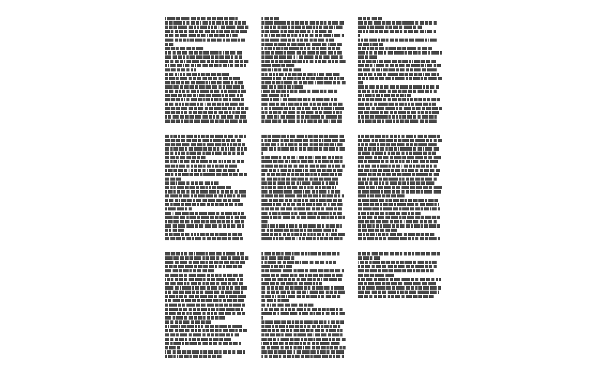
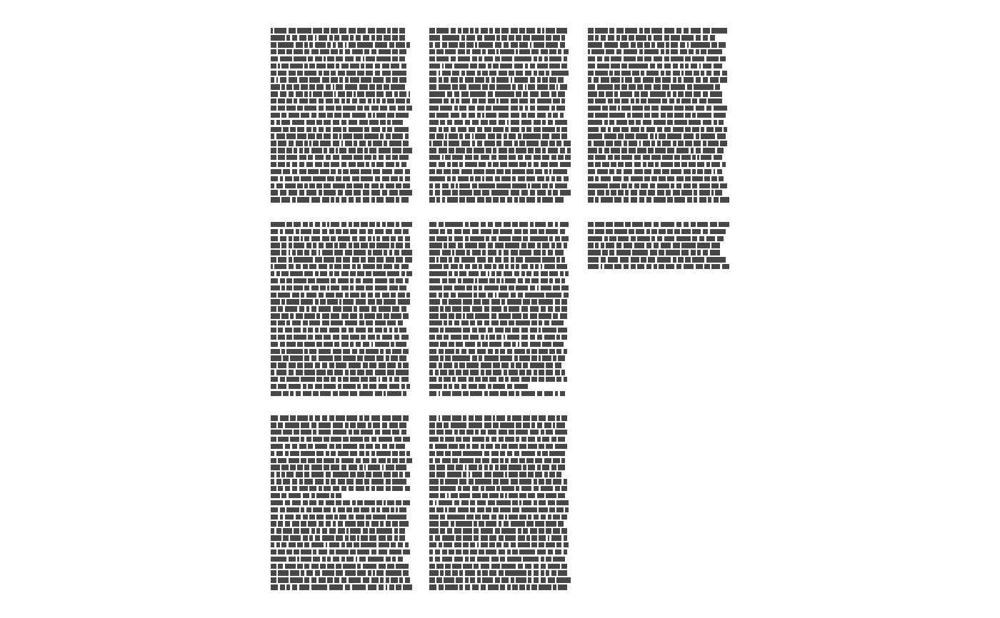
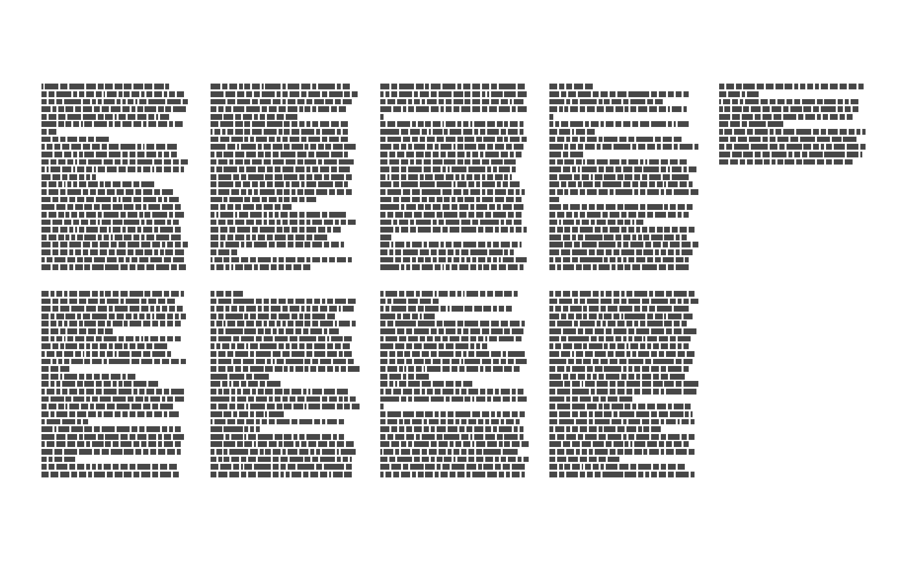
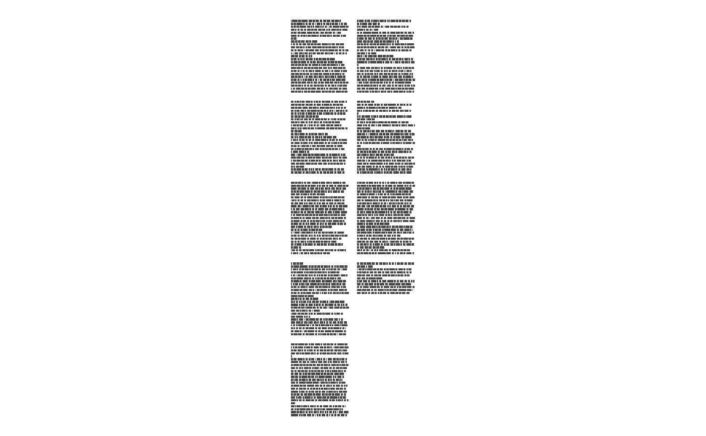
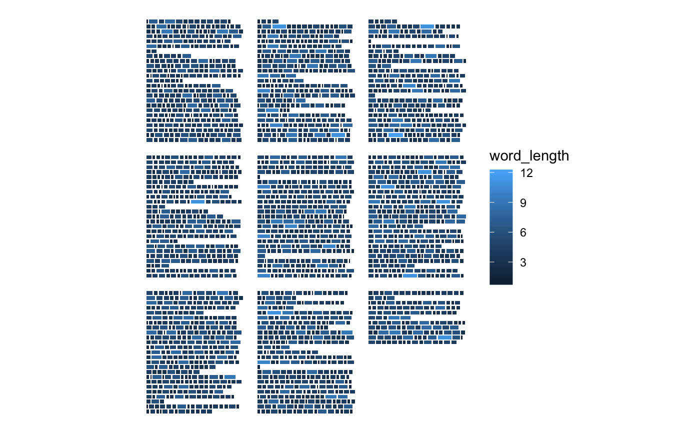

This function can be used in combination with ggpage_plot to get the
same result as ggpage_quick. However by splitting the data.frame
construction and plotting we are able to do intermediate analysis which
can be included in the visualization.
ggpage_build(book, lpp = 25, character_height = 3, vertical_space = 1, x_space_pages = 10, y_space_pages = 10, nrow = NULL, ncol = NULL, bycol = TRUE, wtl = NULL, para.fun = NULL, page.col = NULL, align = "left", line.max = 80, ...)
Arguments
| book | Character or data.frame. Can either have each element be a separate line or having each element being separate words. |
|---|---|
| lpp | Numeric. Lines Per Page. Number of lines allocated for each page. |
| character_height | Numeric. Relative size of the height of each letter compared to its width. |
| vertical_space | Numeric. Distance between each lines vertically. |
| x_space_pages | Numeric. Distance between pages along the x-axis. |
| y_space_pages | Numeric. Distance between pages along the y-axis. |
| nrow | Numeric. Number of rows of pages, if omitted defaults to square layout. |
| ncol | Numeric. Number of columns of pages, if omitted defaults to square layout. |
| bycol | Logical. If TRUE (the default) the matrix is filled by columns, otherwise the matrix is filled by rows. |
| wtl | logical. If TRUE will convert single word vector into a vector with full lines. (defaults to FALSE). |
| para.fun | Function that generates random numbers to determine number of word in each paragraph. |
| page.col | column to split the pages by. |
| align | Type of line alignment. Must be one of "left", "right" or "both". |
| line.max | Maximal number of characters per line. Defaults to 80. |
| ... | Extra arguments. |
Value
`data.frame` containing the following columns:
`word`: Character. The words of the text.
`page`: Integer. Page number.
`line`: Integer. Line number within the page.
`xmin`: Numeric. Border of rectangle, used by
ggpage_plotdo not alter.`xmax`: Numeric. Border of rectangle, used by
ggpage_plotdo not alter.`ymin`: Numeric. Border of rectangle, used by
ggpage_plotdo not alter.`ymax`: Numeric. Border of rectangle, used by
ggpage_plotdo not alter.
Details
The text MUST be presented in a column named text.
Examples
library(dplyr)#> #>#> #> #>#> #> #>#> #> #>library(stringr) library(ggplot2) library(tidytext) library(ggpage) # build and plot ## data.frame with full lines ggpage_build(tinderbox) %>% ggpage_plot()## data.frame with single words ggpage_build(tinderbox) %>% unnest_tokens(text, word) %>% ggpage_plot()## vector with single words ggpage_build(tinderbox %>% unnest_tokens(text, text) %>% pull(text)) %>% ggpage_plot()# Include analysis within ggpage_build(tinderbox) %>% mutate(word_length = str_length(word)) %>% ggpage_plot(aes(fill = word_length))